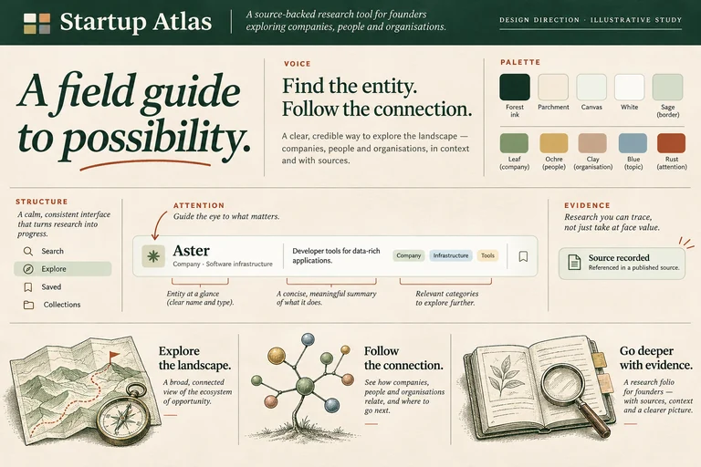

01 / Direction
The thinking behind the system
Principles, brand anatomy, voice, motion and five detailed view playbooks, with new boards that set the direction.
Read the handbookStartup Atlas / visual fieldnotes
A visual exploration of the companies, people and connections that make an ecosystem.
Interface studies, a practical direction handbook and a collection of reusable assets. Explore the images, inspect the foundations and put the components through their paces.
Generated concepts and working interfaces,
each clearly identified.
Preparing the concept collection…
Find the entity.
Follow the connection.
A research tool with an editorial eye:
forest ink, paper and evidence within reach.
The concept collection
Open a study to inspect the full image and its design intent. Move between views to see how the same visual language changes with the task.
The five source wireframes anchor the working system. Four new journeys and an elevation study extend the original five wireframes. Their records and sample figures are fictional; implementation prerequisites are documented in each study.
Try “graph”, “founders” or “evidence”, or return to the complete collection.
The purpose behind the picture
Each perspective has a different job. These briefs connect the visual studies to the decisions a founder makes while exploring the Atlas.
A common ground
Paper gives the research room to breathe. Forest carries structure. Rust marks a deliberate point of attention.
Download the token stylesheetGeorgia Display & narrative
System sans Interface & evidence
Entity names. Clear actions.
Context beside the claim.
Values come from the shared design tokens.
Every type is named in text. Colour supports the label; it does not imply funding, quality or verification.
The component bench
Change the density, entity type and data state. The specimen responds so you can see how the same foundations hold together.
Choose a control to explore the component.
Density is explored here as a design option. The current Atlas uses its own established research density.
Inspect the shared componentsFrom study to system
The live catalogue puts the implemented views, reusable components and interaction contracts in one place. Its examples use the published research snapshot.
Open the working design system Read about these concept studies